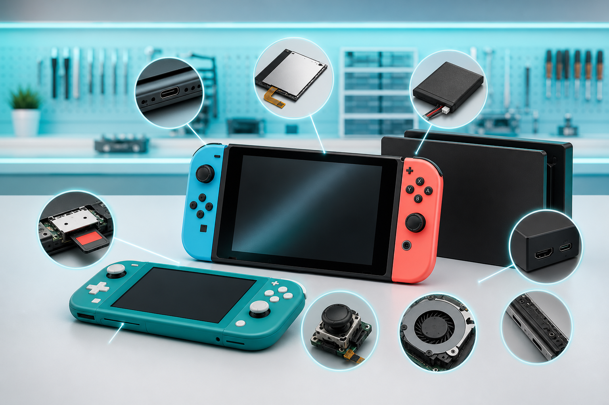

Game Console Repairs
Nintendo Switch Repairs Brisbane

Book professional Nintendo Switch repairs in Brisbane for USB-C charging faults, no power, cracked screen, LCD or touch faults, battery problems, loud fan noise, game card reader issues, Joy-Con faults and dock display symptoms.
Nintendo Switch repair services available at TECHM8
- Nintendo Switch USB-C charging port repair, no charge, loose port and dock connection checks.
- Switch screen repair, LCD faults, touch issues, black screen and display symptoms.
- Switch battery replacement, no power, poor runtime and sudden shutdown checks.
- Switch fan repair, overheating, dust buildup and cooling maintenance.
- Game card reader faults, game not detected, rail symptoms and connection checks.
- Joy-Con, Pro Controller, dock display output, software errors and general diagnostics.